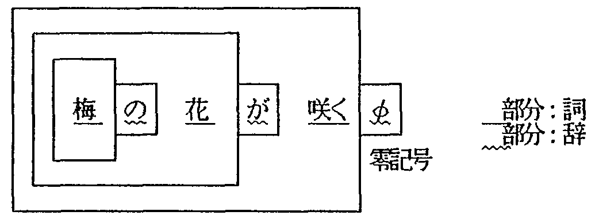
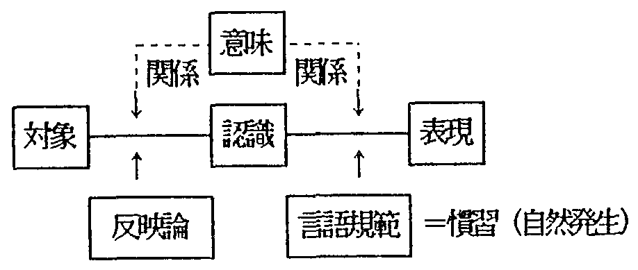
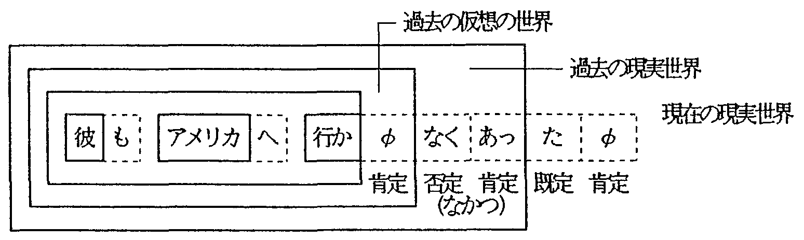
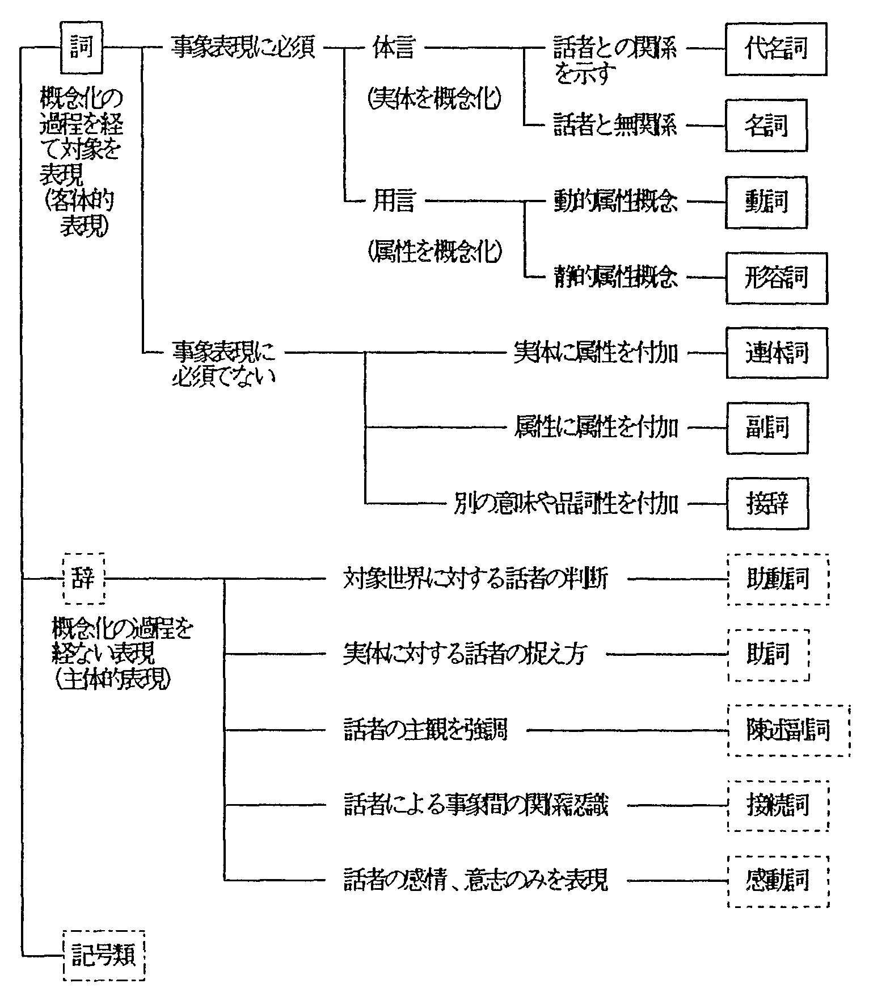
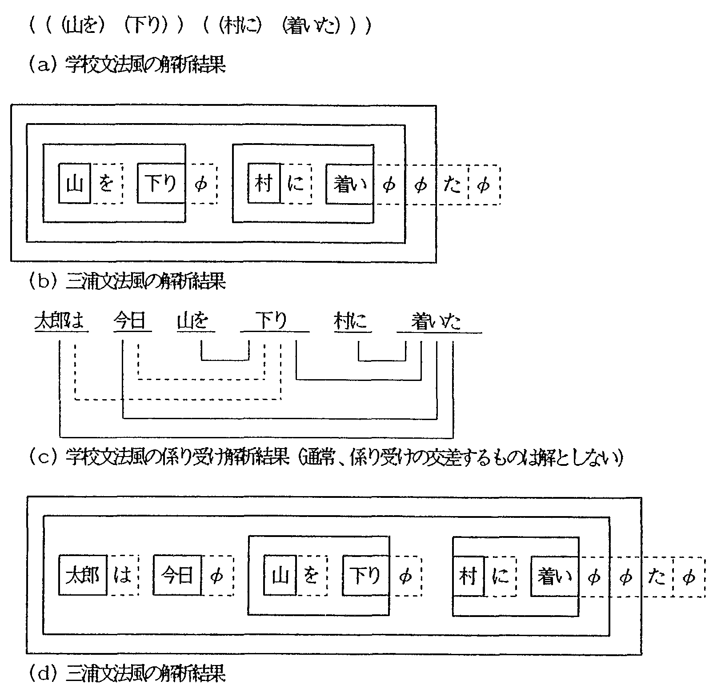
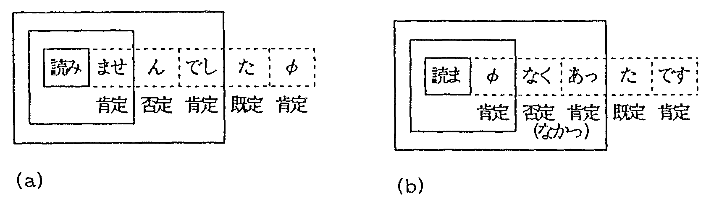
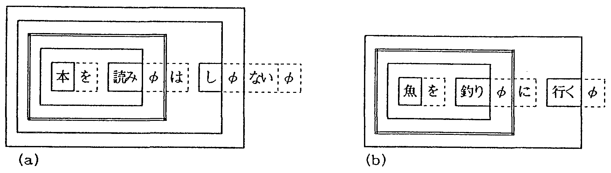
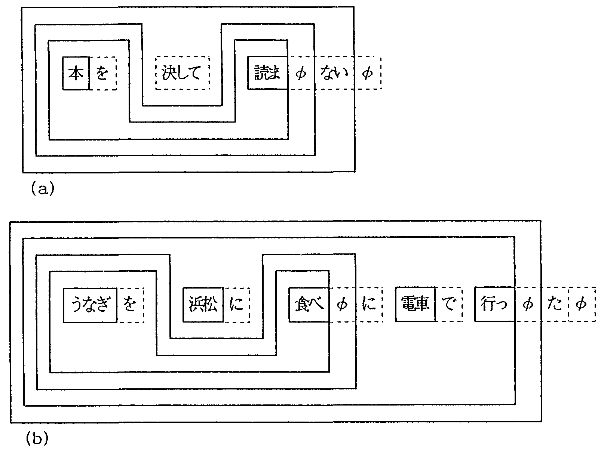

三浦文法は、時枝誠記により提唱され三浦つとむにより発展的に継承された言語過程 説に基づく日本語文法である。言語過程説によれば、言語は対象-認識-表現の過程 的構造をもち、対象のあり方が話者の認識を通して表現されている。本論文では、三 浦文法に基づいて体系化した日本語品詞体系および形態素処理用の文法記述形式を提 案し、日本語の形態素処理や構文解析におけるその有効性を論じた。日本語の単語を、 対象の種類とその捉え方に着目し、約400通りの階層化された品詞に分類して、き め細かい品詞体系を作成した。本論文で提案した品詞体系と形態素処理用文法記述形 式に基づき、実際に形態素処埋用の日本語文法を構築した結果によれば、本文法記述 形式により例外的な規則も含めて文法を簡潔に記述できるだけでなく、拡張性の点で も優れていることが分かった。本品詞体系により、三浦の入れ子構造に基づく意味と 整合性の良い日本語構文解析が実現できるものと期待される。
形熊素処理, 構文解析, 日本語文法, 品詞, 言語過程説, 三浦文法
Miura grammar is a Japanese grammar based on the Constructive Process Theory proposed by M.Tokieda, and developed by T.Miura. In this theory, language is composed of three processes: object, recognition and expression. These processes are combined by the law of causality. The state of an object is reflected in the speaker's recognition, and the way the speaker recognizes, the object gives rise to an expression. This paper proposes a Japanese syntactic category system (part of speech system) based on Miura grammar and formal description method of grammar rules for morphological processing, and discusses its use in Japanese morphological processing and syntactic analysis. Japanese words are classified into 400 hierarchi- cal syntactic categories from the viewpoints of the class of the object itself and the manner of the speaker's recognition. The results of designing Japanese grammar rules for morphological processing using the proposed syntactic categories system and formal description method, show that it is easy to design and improve grammar rules, including nongeneral rules, by the proposed method. The proposed syntactic category system can be used to develop Japaneso syntactic analysis, using nested structure models based on Miura grammar, without a gap between syntactic and semantic analysis.
morphological processing, syntactic analysis, Japanese grammar, part of speech, the Constructive Process Theory, Miura grammar
| 1 まえがき | |
| 2 三浦文法の言語観 | |
| 3 日本語の品詞体系 | |
| 3.1 品詞の大分類 | |
| 3.2 品詞分類の細分化 | |
| 3.3 活用形の扱い | |
| 3.4 学校文法との主な相違点 | |
| 4 形態素処理用の文法記述形式 | |
| 5 本品詞体系の効用 | |
| 6 むすび | |
| 謝辞 | |
| 参考文献 | |
| 付録 |
言語表現には万人に共通する対象のあり方がそのまま表現されているわけでなく, 対象のあり方が話者の認識(対象の見方, 捉え方, 話者の感情・意志・判断などの対象に立ち向かう話者の心的状況)を通して表現されている (言語が対象−認識−表現からなる過程的構造をもつ)ことは, 国語学者・時枝誠記によって提唱された 言語過程説(時枝1941,1950)として知られている. 時枝の言語過程説によれば, 言語表現は以下のように主体的表現(辞)と客体的表現(詞)に分けられ, 文は, 辞が詞を重層的に包み込んだ入れ子型構造(図1参照)で表される.
|
 |
時枝の言語過程説, およびそれに基づく日本語文法体系(時枝文法)を発展的に継承したのが三浦つとむである. 三浦は, 時枝が指摘した主体的表現と客体的表現の言語表現上の違いなどを継承しつつ, 時枝が言語の意味を主体的意味作用(主体が対象を認識する仕方)として, 話者の活動そのものに求めていたのを排し, 意味は表現自体がもっている客観的な関係(言語規範によって表現に固定された対象と認識の関係, 詳細は2章を参照のこと)であるとした 関係意味論1(三浦1977; 池原1991)を提唱し, それに基づく新しい日本語文法, 三浦文法(三浦1967a,1967b, 1972,1975,1976)を 提案している. 三浦文法は, 細部についての分析が及んでいない部分も多々ある未完成な文法であるが, 従来の自然言語処理の研究では見逃されていた人間の認識機構を組み込んだより高度な 自然言語処理系を実現するための新しい視点を与えてくれるものと 期待される(池原,宮崎,白井,林1987; 池原,宮崎,白井1992;宮崎,池原,白井1992; 宮崎1992).
そこで, 上記のようなより高度な自然言語処理系を実現するための第一歩として, 三浦文法に基づく日本語形態素処理系を実現することを目指し, 三浦文法をベースに日本語の品詞の体系化を行い, 規則の追加・修正が容易で拡張性に富む形態素処理用文法を構築した. 本論文では, まず三浦文法の基本的な考え方について述べ, 次にそれに基づき作成した日本語の品詞体系, および品詞分類基準を示すと共に, 形態素処理用の新しい文法記述形式を提案する. さらにそれらの有効性を論じる.
時枝は, 「言語が対象−認識−表現からなる過程的構造をもつ」という言語過程説を提唱し, それを基に時枝文法という独自の日本語文法を構築した. 時枝文法によれば, 言語表現は話者の主観的な感情・要求・意志・判断などを直接的に表現した主体的表現と 話者が対象を概念化して表現した客体的表現に分けられ, 文は主体的表現が客体的表現を重層的に包み込んだ入れ子型構造で表わされる. 時枝は, 言語の本質を主体の概念作用にあるとし, 言語の意味を主体の把握の仕方, すなわち対象に対する意味作用そのものとした. 従って, 言語表現に伴う言語規範(言語に関する社会的な約束事)とそれによる媒介の過程が 無視され, 認識を対象のあり方の反映とみる立場が貫かれなくなってしまい, 言語による情報の伝達について, ソシュールのラングのような個人的な能力に基礎づけるところまで後退している.
これに対して, 三浦は言語の意味を対象/認識/表現の関係として捉えることなど, 時枝の言語過程説にいくつかの修正を加え, 独自の理論的展開を図った. 三浦によれば, 音声や文字の種類に結び付き固定された対象と認識の客観的な関係が言語の意味である. 語は使われて(表現となって)始めて意味(関係)を生じる. 従って, 表現が存在すれば意味は存在し, 表現(文字, 音声)が消滅すれば言語規範に固定されていた対象と認識の関係, すなわち意味も消滅する. 対象や認識そのものは意味ではなく, 意味を形成する実体である. 対象や認識が消滅しても, 表現がある限り意味は存在する. 意味は話者や聞き手の側にあるのではなく, 言語表現そのものに客観的に存在する. 三浦の言語過程説における言語モデルを図2に示す.
|
 |
三浦は, 時枝の提起した“主体の客体化”(1人称の代名詞は主体そのものではなく, 主体が客体化されたものとみなすこと)の問題を, 対象の認識の立場から発展させ, 主体の観念的自己分裂と視点の移動という観点から主体を捉えた. 三浦によれば, 一人称の表現は見たところ, 自分と話者が同一の人間であるが, これを対象として捉えているということは, 対象から独立して対象に立ち向かっている別の人間(主体の観念的自己分裂によって生じた 観念的話者“もう一人の自分”)が存在していると考えるのである. 三浦は, このような観念的話者による視点の移動を表すものとして, 観念的世界が多重化した入れ子構造の世界の中を 自己分裂によって生じた観念的話者が移動する入れ子構造モデル(図3参照)を提案している. このモデルによれば, たとえば, 過去の否定表現は, (過去の仮想世界/過去の現実世界/現在の現実世界) の三重の入れ子構造で表される.
|
 |
日本語は, 膠着言語に分類される言語であり, 小さな単位要素が次々と付着して表現を形成していくという特徴を持つ. これらの単位要素が結合し, 表現構造を形成していく過程には一定の手順がある. 言語過程説によれば, 日本語の表現は客体的表現と主体的表現が入れ子になった構造として捉えることができる.
ここで, 表現の元となる対象世界を構成する一つの事象は, 実体・属性・関係の3要素から構成される. これらに対する話者の認識を言語規範を介して表現に結び付けるときに最も基本となるのは, 概念化された対象(実体・属性・関係)とそれを表現する単語(詞)との対応関係, ならびに概念化された対象に対する話者自身(主体)のあり方と単語(辞)との関係である. 前者に対して詞が選択され, 後者においてそれに辞が付加される. このようにして概念化された対象および主体と単語との結び付きが形成されると, 次にそれらの相互関係が構造化され, 認識された構造と表現構造との対応づけが行われる. この過程で単語と単語が統語規則に従って構造化され, 文が形成される(池原,白井1990).
三浦文法では他の多くの文法とは異なり, 上記のような過程により形成される日本語文において, 表現に用いられる単語を文構成上の機能や単語が表す内容で分類するのではなく, 対象の種類とその捉え方で分類する. 以下, 三浦文法に基づく品詞分類の基本的考え方(宮崎,池原,白井1992; 池原,白井1990;白井,宮崎,池原1992)について述べ, それに基づき作成した日本語の品詞体系を示す.
単語をまず以下のように客体/主体の観点から詞と辞に分ける. 詞をさらに分類すると, 一つの事象を表現するうえで必須である語とそうでない語の2種類がある. 事象表現に必須である語は, 表現の対象が実体か実体の属性かにより体言と用言に分けられる.
体言は実体・属性・関係からなる対象のうち実体を概念化したものである. 実体は物理的実体と観念的実体がある. また, 実体は立体的な構造を持ち, 種々の側面があるため, どの側面から取り上げるかによって使用される体言も異なってくる. また, 実体の構造に対応して体言間も構造的な関係を持つ. 対象に立ち向かう主体(話者)も客体化して捉えた時は詞(体言)が用いられる. 普通の名詞が実体のあり方を捉えたものであるのに対して, 代名詞は実体と主体との特殊な関係を表現する. 主体と対象の関係としては, 1.話者と話者の関係, 2.話者と聞き手の関係, 3.話者と話題となる事物・場所方角・人間などとの関係の3種の関係がある. 実体と実体, 属性と属性, 実体と属性の間には種々の関係が存在する. 関係自体は, 感覚的存在ではないので関係自体を概念的に対象化して名詞として用い, 種々の関係は「上下(の)関係」や「親子のつながり」などのように 表現することが多い.
実体の属性を概念化する用言は, 動的属性を表す動詞と静的属性を表す形容詞に分けられる. 属性も, これを固定的に実体化して捉えた場合は, 「大きさ」や「動き」などのように名詞化する.
事象表現に必須でない語は, 属性に属性を付加する副詞と実体に属性を付加する連体詞に分類される. なお, 「もっと右」の例のような名詞を修飾する語については, 名詞の中の属性把握の部分を取り上げ, それに属性を付加しているとみなすことができるため副詞とする.
話者の感情・意志・判断など対象に対する立場や 対象から引き起こされる話者自身に関する認識を表す辞としては助詞や助動詞が用いられる.
助詞は対象(実体)に立ち向かう話者の立場を直接表現する. 「花咲く」と言えば「花」と「咲く」との間の客観的な関係を捉えたものと見ることができるが, この関係は変わらないものの, 「花が咲く」「花は咲く」「花も咲く」と言えば, 「花」に対する話者の立場が変化してくる.
このように, 助詞が実体に対する話者の捉え方, すなわち, 対象(もの)と主体との関係に関する主体自身の認識を表すのに対して, 助動詞は対象(こと)との関係において話者自身の立場を表現するものと見ることができる. 人間の認識は現実の世界だけを相手にするだけでなく, 想像によって過去の世界や未来の世界, 空想の世界などさまざまな世界に行き来する. このような話者の見る対象世界に対する話者の感情・意志・判断などを直接表現したものが 助動詞である.
他に, 話者の感情や意志などを直接表現する感動詞, 話者による事象間の関係認識を表現する接続詞, および話者の主観を強調する陳述副詞が辞に分類される.
|
 |
以上の11品詞の他に, 他の語(接辞承接語)に付加して別の意味や品詞性を付与する詞である接辞, 文中に出現する句読点や繰返し記号などの記号類の二つを加えて, 図4に示すように合計13の品詞に大分類した.
単語間の文法的接続関係の検定を精密に行い, 形態素処理の精度を向上させるため, 品詞の大分類を細分化して品詞を約400通りに分類した. 細分化のポイントを以下に示す.
(1) 名詞
実体を同種の他の実体と共通の側面, すなわちその一般性の側面で捉えた認識を表す普通名詞, 実体をその固有性の側面で捉えた認識を表す固有名詞 (地名, 人名, 組織名, その他の固有名詞), 動的属性を固定的に実体化して捉えた認識を表す動作性名詞 (サ変動詞型名詞, 連用形名詞, その他の動作性転生名詞), 静的属性を固定的に実体化して捉えた認識を表す状態性名詞 (静詞＜形容動詞語幹に対応・ダ型とタルト型がある＞, 状態性転生名詞 ＜形容詞転生名詞＜＜例: 寒さ, 厚み＞＞・静詞転生名詞＜＜例: 親切さ＞＞＞, 連体詞型名詞＜例: 大型, 急性＞), 対象を具体的に取り上げることができなかったり, 取り上げる必要がない場合などに, 対象を最も抽象化して捉えた認識を表す形式名詞 (例: もの, こと, ため, ところ, とき, まま, 際, 場合｜ の・ん＜準体助詞に対応＞｜よう＜比況の助動詞「よう(だ)」に対応＞｜ そう＜伝聞の助動詞「そう(だ)」に対応＞｜みたい, ふう)に細分化した. その他に特殊なものとして, 具体的な数や数量など(例: 1, 2, …, 2本)単位性の認識を表す数詞, 属性に属性を付加する副詞としても用いられる副詞型名詞 (時詞＜例: 今日, 従来＞, その他の副詞型名詞＜例: 全て, みんな, 多数, 一部＞)を設定した.
なお, 静詞については格助詞(に・の・を)や 肯定判断の助動詞「だ」の連体形「な」が後接するか否かを区別できるようにさらに細分化した.
(2) 代名詞
人称代名詞(例: 私, 彼), 指示代名詞(例: これ, あれ), 疑問代名詞(例: だれ, どれ)の区分を導入した.
(3) 動詞
本動詞/形式動詞の区別(3.4の(9)参照), 活用型(五段/一段/サ変/カ変)の区別, 五段動詞に対する活用行の導入により細分化した.
またサ変動詞は, 単独で用いる「する」「〜する(例: 開発する, 対する)」 「〜ずる(例: 論ずる)」を区別できるようにした. さらに, 五段/一段動詞のうち, 例外的活用をするもの (例: 行く→行った, 有る→有らない×, なさる→なさいます・なさい, 問う→問うた, くれる→くれ)は, 別品詞として区別できるようにした.
(4) 形容詞
ウ音便の形態(例: にくい→にくう, あさい→あそう, 美しい→美しゅう)により細分化した.
(5) 副詞
属性をさらに具体的な面から捉えて別な語と結び付け叙述を立体化する情態副詞 (例: がたがた, ピカピカ), 属性をさらに抽象的な面から捉えて別な語と結び付け叙述の程度を表す程度副詞 (例: ずっと, かなり)に細分化した.
さらに, 格助詞(に・と・の)や骨定判断の助動詞(だ・です)が 後接するか否かを区別できるように細分化した.
(6) 連体詞
指示代名詞が連体詞化した指示連体詞(例: この, その), 疑問代名詞が連体詞化した疑問連体詞(例: どの, どんな), 形容詞が連体詞化した形容詞的連体詞(例: 大きな), それ以外で外延の制約を表す限定連体詞(例: ある, あらゆる)に細分化した.
(7) 接辞
接辞承接語との接続形態により 接頭辞/接尾辞/接中辞(例: 〜対〜)に中分類した.
接頭辞については, 接辞承接語の品詞により名詞接続型/動詞接続型(例: ぶち)/ 形容詞接続型接頭辞(例: もの｜こ, ま｜お)に小分類した.
接尾辞については, 接辞承接語+接尾辞で構成される複合語の品詞により 名詞型/動詞型(例: れる, られる, せる, させる｜ がる, ぶる, めく, づく, つく, しみる, 過ぎる｜込む, 始める, 終わる, 続ける, きる)/ 形容詞型接尾辞(例: たい｜らしい, がましい, (っ)ぽい｜ やすい, よい, にくい, づらい, がたい)に小分類した.
さらに, (野村1978)を参考に 接辞のより細かな文法的・意味的属性により以下のように細分化した.
[細分化された名詞接統型接頭辞とその例]
＜普通名詞型＞県, 女, 核
＜固有名詞型＞東, 新, 奧
＜動詞型＞超, 反
＜形容詞型＞大, 新
＜連体詞型＞各, 全, 同
＜副詞型＞再, 最, 既
＜否定型＞無, 不, 非, 未
＜前置助数詞型＞約, 第
＜敬意添加型＞御, ご
[細分化された:名詞型接尾辞とその例]
＜普通名詞型＞者, 人, たち
＜固有名詞型＞市, さん, 屋, 号
＜動作性名詞型＞
＜＜サ変動詞型名詞型＞＞化, 視｜
＜＜連用形名詞型＞＞行き, 沿い｜
＜＜その他＞＞発, 製
＜状熊性名詞型＞
＜＜ダ型静詞型＞＞そう, げ, 的｜
＜＜タルト型静詞型＞＞然｜
＜＜状態性転生名詞型＞＞さ, み, け｜
＜＜連体詞型名詞型＞＞性, 用, 風, 型, 式
＜後置助数詞型＞個, 番, ％,
＜助数詞承接型＞強, 台, 目
＜副詞型名詞型＞
＜＜時詞型＞＞前, 後, 間, 内, 中, 時, がてら｜
＜＜その他＞＞上
＜代名詞型＞たち, ら, 自身
なお, 各型の接尾辞は細分化された名詞・動詞・形容詞の品詞体系と対応付けられている (例: 普通名詞型接尾辞「者」は普通名詞に対応する).
(8) 接統詞
接続対象により文接続詞(例: しかし, ただし)/ 句接続詞(例: または, および)の区別を導入した.
(9) 感動詞
話者の呼びかけや感情を表す感嘆詞(例: さあ, おや, まあ), 相手の言葉に対する聞き手の応答を表す応答詞(例: はい, ええ, いいえ)に細分化した.
(10) 助動詞
話者の肯定判断(だ, ある, です, ます, φ＜零判断辞＞)/ 否定判断(ない, ぬ, まい)/ 既定判断[回想・確認](た＜たり, て＞, だ＜だり, で＞)/ 未定判断[推量・意志](う, よう, らしい, べし)を表す助動詞に細分化した,
(11) 助詞
実体のあり方の認識を表す格助詞 (が, を, に, へ, と, から, より, まで, で, をば, って, して｜の), 認識に対する陳述の要求を表す係助詞 (は, こそ, も, さえ, すら, でも, とて, しか, しも, ぞ, して), 実体や認識に対する観念的前提の付加を表す副助詞 (は｜など, なんか, なんて｜まで, のみ, (っ)きり, くらい, ぐらい, だけ, ばかり, ほど, とも, ずつ｜や, やら, か, なり, なりと), 認識内容の確認を表す間投助詞 (ね(え), さ(あ), よ(お), な(あ), の( お)｜ってば, ったら, って｜や, よ｜だ, です, と)の他, 事象間の関係づけを行う接続助詞と話者の感情を伝達する終助詞に中分類した.
さらに, 接続助詞は接続の型(池原,白井1990; 南1974,1993), 終助詞は伝達の方向(池原,白井1990; 白井,宮崎,池原1992;佐伯1983)により, それぞれ, 以下に示すように3通りに細分化した.
[接続助詞の細分化]
＜同時型＞つつ, ながら
＜条件型＞ば, と, に, ながら
＜展開型＞が, から, けれど(も), けど(も), し
[終助詞の細分化]
＜話者方向＞
＜強意＞＞ぜ, ぞ, わ, ね(え), さ, よ, な, とも, ってば, ったら, って, っと, い, や,
＜＜驚き＞＞わ
＜相手方向＞
＜＜疑問＞＞か, かしら, や, っけ｜
＜＜命令・勧誘＞＞な, ねえ, い, たら, だら｜
＜＜禁止＞＞な｜
＜＜伝聞＞＞と, って｜
＜＜確認＞＞ね(え), さ, よ｜
＜＜婉曲＞＞が, けれど(も), けど(も)
＜不定方向＞
＜＜詠嘆＞＞なぁ, わぁ, のぉ, に｜
＜＜不確定＞＞やら
(12) 記号類
日本語文中に現れる記号類を, その機能に着目して以下のように細分化した. 句点相当記号(例: 。？！．) 読点相当記号(例: 、，) 中点相当記号(例: ・＜空白＞) 引用符(例: 「」『』‘’“”) 括孤類(例: ＜＞《》【】［］｛｝（）) 補足記号類(例: …〓―) 文頭記号(例: ◎○〇◇▽●☆) 数式関連記号(例: ，．〜―−＋―±×÷＝≠＜＞≦≧＊／) 繰返し記号(例: ゝゞヽヾ々) その他の特殊記号(例: ；：＠＃)
動詞, 形容詞, 動詞型接尾辞, 形容詞型接尾辞のような活用語の活用形は, 従来の学枝文法における6活用形を基本とし, 以下の変更を加えた.
| (1) | 未然形を以下の2通りに細分化した. |
| ・未然形1: 推量形[〜う, 〜よう] | |
| ・未然形2: 否定形[〜ぬ, 〜ない] | |
| (2) | 連用形を以下の3通りに細分化した. |
| ・連用形1: 連用中止形[〜 〜ます]・連用修飾形 | |
| ・連用形2: 音便形[〜た, 〜だ」 | |
| ・連用形3: 形容詞ウ音便形[〜ございます] | |
| (3) | 形容詞のカリ活用語尾は, 以下のように扱う. |
| ・かろ(未然形1)→く(形容詞語尾・連用形1)+あろ(助動詞「ある」の未然形1) | |
| ・かっ(連用形2)→く(形容詞語尾・連用形1)+あっ(助動詞「ある」の連用形2) | |
| (4) | タルト型形容動詞活用語尾は, 以下のように扱う. |
| ・と(連用形1)→と(格助詞) | |
| ・たる(連体形)→と(格助詞)+ある(形式動詞「ある」の連体形) |
3.2〜3.3で示した品詞体系と学校文法との主要な相違点は, 以下の通りである.
(1) 形容動詞を独立した品詞とはせず,
名詞(静詞)+助動詞(肯定判断)「だ」/名詞(静詞)+格助詞「に」とした.
(2) 受身・使役の助動詞(れる, られる, せる, させる)は動的属性を付与する詞とし,
動詞型接尾辞とした.
(3) 希望の助動詞(たい)は静的属性を付与する詞とし, 形容詞型接尾辞とした.
(4) 伝聞の助動詞(そうだ), 比況の助動詞(ようだ), 様相の助動詞(そうだ)は助動詞とせず,
それぞれ, 形式名詞(そう, よう)/静詞型接尾辞(そう)+肯定判断の則動詞(だ)とした.
(5) 準体助詞(の), 終助詞(の)は形式名詞とした.
(6) 接続助詞(ので, のに), 終助詞(のだ)はそれぞれ,
形式名詞(の)+[格助詞(で)/肯定判断の助動詞(だ)の連用形1(で)]/
格助詞(に)/肯定判断の助動詞(だ)とした.
(7) 接続助詞(て, で, たり, だり)は既定判断の助動詞(た, だ)の連用形1とした.
(8) 補助動詞(ある), 補助形容詞(ない)はそれぞれ, 肯定判断の助動詞, 否定判断の助動詞とした.
| 例: | 本である/ない, | |
| 静かである/ない, | ||
| 重くない | ||
| 書いてある/ない |
(9) 既定判断の助動詞の連用形1(て, で)に後接する動詞 (いる, みる, くれる, あげる, くる, もらう, やる, しまう, おく, いく, 下さる, いただく, …), 形容詞連用形1/[静詞十格助詞(に)]に後接する動詞(する, なる), およびサ変動詞型名詞/連用形名詞に後接する動詞 (する, できる, 下さる, なさる, 致す, 申す, 申し上げる, いただく, 願う, たまう, …)は, 形式動詞とする.
| 例: | 走っている, 美しくなる, | |
| 静かになる, 開発する |
形態素処理における隣接単語間の文法的な接続検定には, 通常各単語の辞書情報に前接コードと後接コードを持たせ, その二つの情報から前接コードと後接コード間の接続の可否を示す マトリックス形式の接続テーブルを用いることが多い. しかし, 規則が簡潔に分かりやすく記述されておらず, 例外的な接続をする単語に対しては, 従来の規則との整合性を保ちながら, 新しい前接・後接コードを付与したり, 辞書情報を変更しなければならず, 規則の追加・修正が容易でなく, 規則のメンテナンス性が悪い. また, 「良さそうだ」(形容詞に「そうだ」が接続する場合, 通常形容詞語幹に直接「そうだ」が接続する＜例: 楽しそうだ＞が, 「良い・無い」は接尾辞「さ」を介して接続する)のように, 2項関係だけでなく, 3項関係もチェックしなければならないような例外的な接続に対応できない.
そこで, このような問題を解決するものとして, 以下に述べるような形態素処理用の文法記述形式(接続ルール)を提案する. この接続ルールは基本的には, ある品詞 P0 の直後 (接尾辞などで直前の語の品詞などが問題となる場合には直前)に文法的に接続可能な全ての 品詞 q1, q2, −−− qm を リスト形式で記述し, そのリストと p0 を対にして, ( ( p0 ) ( ( q1 ) ( q2 ) −−− ( qm ) ) ) の形で定義したもの(ルール文)の集合であり, 必要に応じて3項以上の関係にも簡単に拡張できる.
文法記述においては, 規則の追加・修正が容易であること, 例外的な規則を記述しやすいこと, 規則を簡潔に分かりやすく記述できることなどを考慮し, 以下のような点を工夫した.
(1) 接続ルールの記述量の削減
(2) 例外的な規則の記述
(3) 接続ルールの拡張性
ここで, 接続ルールは人間にとって見やすく, メンテしやすく作られているが, これをそのまま形態素処理における単語接続検定に用いると, 処埋効率が低下する. そこで, 接続ルールをこれと等価で単語接続検定が高速に行える形式の接続表 { ( pi, qj, ( pi の字面 ) ( qj の字面 ), (接続確率), ( pi , qj の手続き名 ) ) } ＜ pi , qj はそれぞれ前接品詞・後接品詞で, ワイルドカード文字や句境界架空単語の品詞を用いず, 定義文・同格文による品詞の置換済みである, ( ) は省略可, ＿や＿ の部分をそれぞれ主キー, 副キーとして接続表を検索できるようになっている. 3項以上の関係は別形式で記述＞に変換することとし, 接続ルールから接続表を自動生成するツール (接続表ジェネレータ) を作成し, 形態素処理系において, 接続表を用いて単語接続検定を高速に行えるようにした.
本品詞体系は, 三浦文法をベースに作成されており, 構文構造として, 従来の句構造や係り受け構造とは異なった三浦の入れ子構造を想定している. 従って, 三浦の入れ子構造と親和性が良く, 以下のような日本語処理系の実現が期待できる.
(1) 多目的利用型の日本語形態素処理用文法
きめ細かい品詞分類に基づく形態素処理用の日本語文法により, 単語間の文法的接続チェックを厳密に行えるので, 本日本語文法を正しい文の解析だけでなく, 正しい文の生成や入力文の誤り検出など多目的に利用可能となる.
3で提案した約400 通り(大分類＝13)の品詞体系に基づき, 実際に網羅的な日本語形態素処理用文法を作成した. 種々の日本語表現を含む 日英機械翻訳用機能試験文(3300文)(池原,白井1990)を用いて 形態素解析システム(高橋,佐野,宍倉,前川,宮崎1993)上で 形態素解析実験を行った. 本実験においては, 例外的な規則をも含む文法の記述のしやすさ, 規則の追加・修正など文法の拡張のしやすさなどを, 文法規則や辞書の修正, 文法規則や辞書への単語の追加を行いながら確認した.
その結果, 例外的な規則も含めて文法を簡潔に記述できるため, 文法規則がコンパクトとなるだけでなく(ルール数＝374), 規則の追加・修正が容易で拡張性の点で優れていることなど, 本品詞体系および形態素処理用の文法記述形式の有効性を確認できた. また, 本実験に用いた3300 の機能試験文には日本語の種々の表現を網羅しているため, 本実験によりかなり精度の良い文法を実現できたと考えている.
(2) 意味と整合性のよい構文解析
現在, 主流となっている文節構文論(学校文法)に基づく日本語パーザでは 構文解析結果が一般に意味と整合性が良くなく, 時枝文法風の構文解析の方が解析結果に則って意味がうまく説明できることが 指摘されている(水谷1993). 本文法は時枝文法を発展的に継承した三浦文法を採用しているので, 意味と整合性の良い構文解析を行うことができる.
例えば, 「山を下り, 村に着いた」は, 学校文法風に解析すれば, 図5(a)のような意味的におかしい解析結果を得るが, 三浦文法風に解析すれば, 図5(b)のように意味的に正しい解析ができる (助動詞「た」のスコープは, (b)の場合動詞「下る」と「着く」を含む文全体となるが, (a)の場合動詞「着く」のみとなる) .
|
 |
また, 「太郎は今日山を下り, 村に着いた」は, 学枚文法風の係り受け解析では, 図5(c)のように「太郎は」「今日」の係り先は「下り」か「着いた」のどちらか一方となるが (通常, 係り受け解析では係り受けの曖味さの爆発的増大を抑止するため, 係り受けの非交差条件と係り先は1つであるという制約をもうけている), 三浦文法風に解析すれば, 図5(d)のように「太郎は」「今日」が共に「下り」「着い」の両方に係っているという 意味的にも正しい解析結果を入れ子構造により自然に表現することができる.
(3) 微妙なニュアンスの違いを解析できる構文・意味解析
助詞の使い分けによって生じる微妙なニュアンスの違いは, 格助詞を単に用言に対する実体の関係(格関係)として捉えている限り解析できない. 三浦の助詞論(三浦1967a,1967b, 1972,1975,1976)によれば, 格助詞「が」は実体の個別性, 係助詞「は」は実体の普遍性, 副助詞「は」は実体の特殊性を表す. 例えば, 「鳥が飛ぶ」は発話者の目前にいるインスタンス(個体)としての「鳥」を 取り上げているのに対して, 「鳥は飛ぶ」はクラス(種)としての「鳥」を取り上げているし, 「太郎は学生です」と「太郎が学生です」は微妙なニュアンスの違いがある (宮崎,高橋1993).
次に, 連続した辞が付加されている述語の構造を考える. 「読みませんでした」と「読まなかったです」を例にとり両者の構造を比較する. ただし, 「読む」はその否定形「読まない」と比べ肯定と見ることができるので, このような肯定をφ判断辞で表現し, また「なかっ」は「ない+ある」と分けて考える. この上で, 三浦が指摘した観念的世界の多重化に基づいて述語構造を考察すると図6のようになる. すなわち, 「読む」の後に, 肯定・否定・肯定・既定・肯定の順に話者の判断が重畳されている点ではまったく 同じ構造となっている. ただし, 陽に表現された語とφ判断辞の違いから, 丁寧さと断定の度合いに微妙な差が生じていると考えられる.
|
 |
このように, 三浦文法の品詞体系やそれに基づく入れ子構造により, 助詞の使い分けや連続した辞によって表現される微妙なニュアンスの違いを解析できるようになる.
(4) 二つの品詞性のある語を自然に扱える構文解析
一語が二つの品詞性を持つ場合(一語が体と用を兼ねて使われる場合等)の例として 「本を読みはしない」をとりあげる. 話者は「本を読む」という事象を取り上げ, 「は」で特殊性という主体判断を下した後, その動作に対して否定の判断を下している. ここで, 事象の特殊性を表すために, 取り上げた事象全体の捉え直しも行われ, 実体化(体言化)が行われている. すなわち, この表現は図7(a)のような入れ子構造と見ることができる. 「読む」は二重線の内側の世界では動詞として働いているが, その外の世界の構成要素で体言の一部分を構成していると考えられる.
このように, 実際の表現の場面では, ある品詞属性を持つ単語が組み合わさって文要素が構成されるという単純な図式では 説明できないと思われるものを図7(a)〜(b)のように入れ子構造により自然に扱うことができる.
|
 |
(5) 入れ子破りの表現を解析できる構文解析
係り受けが交差し入れ子破りが生じる場合, 句構造解析では構文木が生成されない. 一方, 係り受け解析では, 係り受け構造が得られるが, 係り受けの曖味さが爆発的に増大してしまう. 三浦の入れ子構造では, 「本を決して読まない」「うなぎを浜松に食べに電車で行った」など 入れ子破りが生じる場合, 主体表現である陳述副詞「決して」と否定の助動詞「ない」との呼応, および格要素「浜松に」が直近の動詞「食べる」に係らず, 後方の動詞「行く」に係るという点に着目して, 図8(a)〜(b)のように入れ子構造化できる.
|
 |
(6) 意味の単位としてのフレーズが切り出し可能
統語構造と意味は一体化したものであり, これを独立に扱おうとすれば, 構造のもつ意味が欠落する. 各部分はそれを含む上位の構造の中に位置づけられて始めて意味を持つ. 従って, 部分を全体の中で位置づけて解析を進めることが必要である. 三浦の入れ子構造モデルでは, 内側の入れ子はそれを包含するより大きな入れ子の部分となっており, 上位の構造の中に自然に位置づけられている. そこで, このような入れ子を意味のまとまった単位(フレーズや慣用表現)に翻訳しようとする フレーズ翻訳方式や多段翻訳方式(池原,宮崎,白井,林1987; 池原,宮崎,白井1992)などにおける意味の単位とすることができると考える.
時枝文法を発展的に継承した日本語文法である三浦文法に基づき, 単語を対象の択え方で分類することにより, 日本語の品詞の体系化を行い, 品詞を約400通り(大分類数: 13)に分類した品詞体系を作成すると共に, 規則の追加・修正が容易で拡張性に富む形態素処理用の文法記述形式を提案し, それらの有効性を論じた.
本論文で提案した品詞体系に基づき, 実際に網羅的な日本語形態素処理用文法(ルール数＝374)を作成し, 種々の日本語表現を網羅した日英機械翻訳用機能試験文(3300文)を用いた形態素解析実験により, 本文法の改良を進めると共に, 本品詞体系および形態素処理用の文法記述形式の有効性を確認した. 今後, 本文法を組込んだ形態素解析システムの定量的評価を進めると共に, 構文解析用文法規則を作成する予定である.
接続表ジェネレータの作成や形態素解析実験にご協力いただいた, 高橋大和君(現NTTコミュニケーション科学研究所勤務), 宍倉祐司君, 前川忠嘉君をはじめとする, 新潟大学工学部情報工学科・宮崎研究室の学生諸君に深謝する.
| 大分類 | 中分類 | 小分類 | 細分類 |
| 名詞 | 普通名詞 | ||
| 固有名詞 | 地名 人名 組織名 その他の固有名詞 | ||
| 動作性名詞 | サ変動詞型名詞 連用形名詞 その他の動作性転生名詞 | ||
| 状態性名詞 | 静詞 | ダ型(〜を/〜の/〜な/〜に) | |
| タルト型(〜の/〜たる/〜と) | |||
| 状態性転生名詞 | 形容詞転生名詞 静詞転生名詞 | ||
| 連体詞型名詞 | |||
| 数詞 | 数詞(単独) 数詞+後置助数詞 数詞+後置助数詞+助数詞承接型接辞 前置助数詞+数詞 前置助数詞+数詞+後置助数詞 前置助数詞+数詞+後置助数詞+助数詞承接型接辞 | ||
| 副詞型名詞 | 時詞 その他の副詞型名詞 | ||
| 形式名詞 | もの/こと/ため/… の/ん よう(比況) みたい/ふう そう(伝聞) |
||
| 代名詞 | 人称代名詞 指示代名詞 疑問代名詞 |
| 大分類 | 中分類 | 小分類 | 細分類 | ||||
| 動詞 | 本動詞 | 五段動詞 |
| ||||
| 一段動詞 | 規則型/例外型(くれる) | ||||||
| カ変動詞 | |||||||
| サ変動詞 | する/〜する/〜ずる | ||||||
| 形式動詞 | 五段動詞 | 本動詞の細分類と同様 | |||||
| 一段動詞 | |||||||
| カ変動詞 | |||||||
| サ変動詞 | |||||||
| 形容詞 | 本形容詞 | ウ音便う(語幹末音韻不変化) ウ音便う(語幹末音韻変化) ウ音便ゅう |
|||||
| 形式形容詞 | ウ音便う(語幹松音韻不変化) ウ音便う(語幹末音韻変化) ウ音便ゅう |
||||||
| 連体詞 | 指示連体詞 疑問連体詞 形容詞的連体詞 限定連体詞 |
||||||
| 副詞 | 情意副詞 程度副詞 |
〜だ・です/〜の/〜に/〜と 〜だ・です/〜の/〜に/〜と |
| 中分類 | 小分類 | 細分類1 | 細分類2 |
| 接頭辞 | 名詞接続型接頭辞 | 普通名詞型 固有名詞型 動詞型 形容詞型 連体詞型 副詞型 否定型 前置助数詞型 敬意添加型 | |
| 動詞接続型接頭辞 | 動詞型 | ||
| 形容詞接続型接頭辞 | 名詞型 形容詞型 敬意添加型 | ||
| 接中辞 | |||
| 接尾辞 | 名詞型接尾辞 | 普通名詞型 | |
| 固有名詞型 | 地名/人名/組織名/その他 | ||
| 動作性名詞型 | サ変名詞型/連用形名詞型/その他 | ||
| 状態性名詞型 | ダ型静詞(〜を/〜の/〜な/〜に) タルト型静詞(〜の/〜たる/〜と) 状態性転生名詞(形容詞/静詞) 連体詞型名詞 | ||
| 後置助数詞型 | |||
| 助数詞承接型 | |||
| 副詞型名詞型 | 時詞型/その他 | ||
| 代名詞型 | 人称/指示/疑問 | ||
| 動詞型接尾辞 | 本動詞型 形式動詞型 | 動詞の小/細分類と同様 | |
| 形容詞型接尾辞 | 本形容詞型 形式形容詞型 | 形容詞の小/細分類と同様 |
| 注: | 動詞型接尾辞・形容詞型接尾辞の本〜型・形式〜型(小分類)の区分は、 動詞連用形1のみに後接する接尾辞(例: 〜始める/〜込む/〜やすい/〜たい)を 形式〜型とし、 それ以外の接尾辞(例:〜めく/〜がる/〜ぶる/〜づく/〜らしい/〜っぽい/〜過ぎる)を 本〜型とする. |
| 大分類 | 中分類 | 小分類 | 細分類 |
| 助動詞 | 肯定判断 | だ ある です ます φ(零判断辞) | |
| 否定判断 | ない ぬ まい | ||
| 既定判断 | た(て・たり) だ(で・だり) | ||
| 未定判断 | う よう らしい べし | ||
| 助詞 | 格助詞 | 連用格助詞 | が/を/に/へ/と/で/まで/… |
| 連体格助詞 | の | ||
| 係助詞 | は/も/こそ/… | ||
| 副助詞 | は/など/まで/や… | ||
| 間投助詞 | ねぇ/って/や/だ… | ||
| 接続助詞 | 同時型 条件型 展開型 |
つつ/ながら/… ば/と/ながら/… が/から/し/… | |
| 終助詞 | 話者方向 相手方向 不定方向 |
さ/ね/よ/ぞ/わ/… か/な/と/ね/が/… なぁ/やら/… | |
| 陳述副詞 | 〜だ・です/〜の/〜に/〜と | ||
| 接続詞 | 文接続詞 句接続詞 |
||
| 感動詞 | 感嘆詞 応答詞 |
| 大分類 | 中分類 | 小分類 | 細分類 |
| 記号類 | 句点相当記号 | 句点 疑問符 感嘆符 ピリオド その他の句点相当記号 |
|
| 読点相当記号 | 読点 コンマ その他の読点相当記号 | ||
| 中点相当記号 | 中点 空白 その他の中点相当紀号 | ||
| 引用符 | 引用始め 引用終り | ||
| 括弧類 | 開括弧 閉括弧 | ||
| 補足記号類 | … 〓 ― その他の補足記号類 | ||
| 文頭記号 | |||
| 数式関連記号 | 数詞関連記号 数式記号 | ||
| 繰り返し記号 | |||
| その他の特殊記号 | |||
| 境界表示 | 文頭表示 | ||
| 文末表示 | |||
| 句境界表示 | 用言・体言共に後接 用言接続・体言後接せず 用言せず後接・体言後接 用言・体言共に後接せず | ||
| 単語境界表示 | 語頭 語末 |
| 略 | 歴 | ||
| 宮 | 崎 正弘: 1969年東京工業大学工学部電気工学科卒業. 同年日本電信電話公社に入社. 以来, 電気通信研究所において大型コンピュータDIPSの開発, コンピュータシステムの性能評価法の研究, 日本文音声出力システムや機械翻訳などの自然言語処理の研究に従事. 1989年より新潟大学工学部情報工学科教授. 自然言語理解, 機械翻訳, 辞書・シソーラスなど自然言語処理用言語知識の体系化などの研究に従事. 工学博士. 電子情報通信学会, 情報処理学会, 人工知能学会, 各会員 | ||
| 池 | 原 悟: 1967年大阪大学基礎工学部電気工学科卒業. 1969年同大学大学院修士課程修了. 同年日本電信電話公社に入社. 以来, 電気通信研究所において数式処理, トラヒック理論, 自然言語処理の研究に従事. 現在, NTTコミュニケーション科学研究所池原研究グループ・リーダ(主幹研究員). 工学博士. 1982年情報処理学会論文賞, 1993年情報処理学会研究賞受賞. 電子情報通信学会, 情報処理学会, 人工知能学会, 各会員 | ||
| 白 | 井 諭: 1978年大阪大学工学部通信工学科卒業. 1980年同大学大学院博士前期課程修了. 同年日本電信電話公社入社. 以来, 電気通信研究所において日英機械翻択を中心とする自然言語処理の研究に従事. 現在, NTTコミュニケーション科学研究所主任研究員. 電子情報通信学会, 情報処理学会, 各会員 | ||
|
(1994年6月9日受付) (1994年11月21日再受付) (1995年1月12日採録) | |||